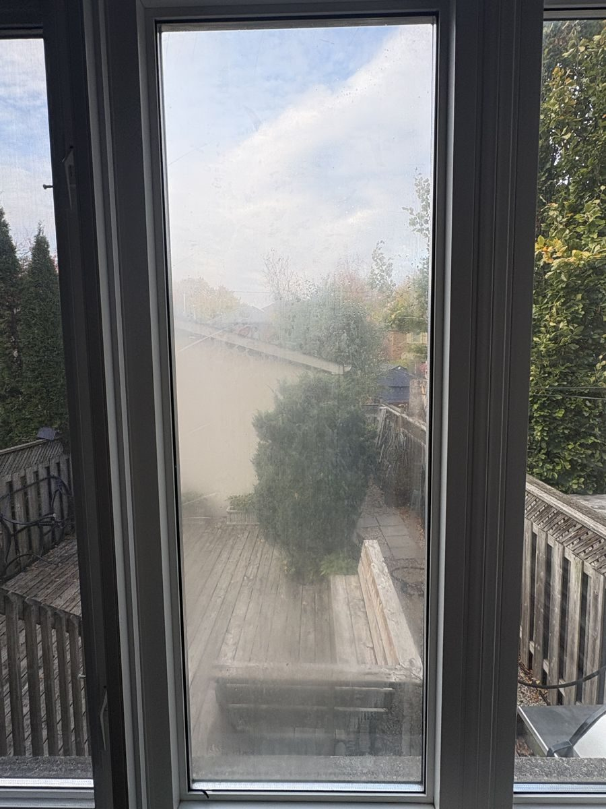
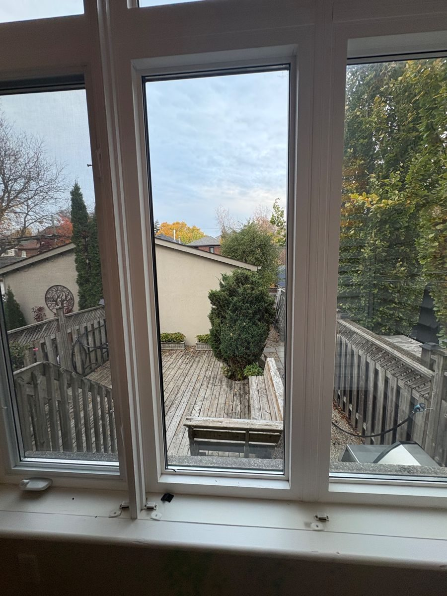

Window Glass Replacement in Toronto
Cracked or broken window glass replaced in your existing frame, matched to the original. Single pane, double pane and tempered glass.

Recent jobs


Window Glass Replacement in Toronto: what we do
A cracked pane doesn't mean a new window. We secure the opening if needed, measure the glass to the 1/16 of an inch, and install new glass or a new sealed unit with fresh seals, then check the window opens, closes and locks.
- Sealed double and triple pane units
- Single pane, storm and older wood windows
- Tempered safety glass for doors and low windows
- Laminated and obscure glass
- Board-up when the opening is exposed
What affects the price in Toronto
Every window is different. The price depends on:
- The size of the glass
- Single pane or sealed double or triple pane unit
- Glass type: tempered, laminated, Low-E or obscure
- Whether the opening needs to be boarded up first
- Access: ground floor, upper floor or condo
Text us a photo of your window and we'll give you a free quote, usually the same day.
Why Toronto homeowners call us
Repair, not replace
We fix the part that failed. A new sealed unit or operator costs a fraction of a new window.
Quotes from a photo
Text us a photo and we can usually give you a price without a visit.
All window brands
We work on most major brands and Canadian manufacturers, old and new.
Insured, WSIB covered, 1-year warranty
We are fully insured and WSIB covered, and our workmanship is backed by a 1-year warranty.
Serving Toronto and nearby
Toronto has every kind of window: century homes with wood sashes in the Annex and Leslieville, postwar bungalows, 1990s replacement windows now failing, and thousands of condo units with floor-to-ceiling glass and sliding balcony doors.
We also serve North York, Etobicoke, Scarborough, East York, York. See our Toronto service area page or learn more about window glass replacement.
Other repairs in Toronto
Common questions
How much does window glass replacement cost in Toronto?
Price depends on the size, thickness and type of glass. Send us a photo and the rough size and we'll quote it.
Can you replace just the glass?
Yes. Replacing only the glass is our most common job. The frame stays in place.
Do I need tempered glass?
Doors, sidelights and glass near floors, stairs and bathtubs usually need safety glass. We check and use the right type.
What should I do until you arrive?
Keep people away from the glass and tape a small crack with clear packing tape on both sides. If the opening is exposed, call us to board it up.
Window Glass Replacement in other cities
Send us a photo. Get a price.
Free estimates across Toronto and the Greater Toronto Area.